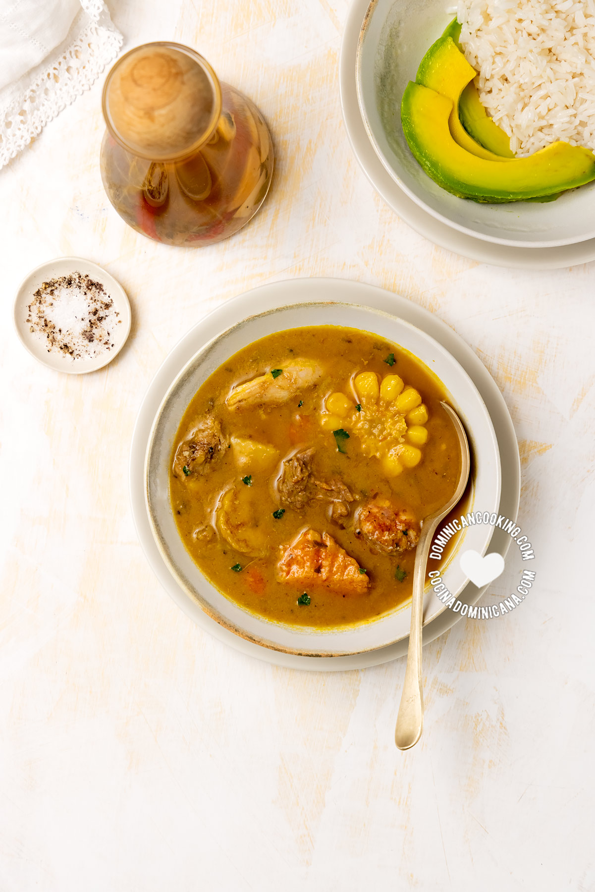

(caldo de carne y vegetales dominicano) es sin duda el plato más apreciado de los dominicanos. El
sancocho se suele hacer en ocasiones especiales, pero puedes disfrutarlo cualquier día. Aquí te muestro todas las
formas de preparar el sancocho, y cómo hacerlo tú.

INGREDIENTES
1 libra carne de res.
1 libra carne de chivo.
1 libra carne de cerdo.
1Jugo de 2 limones.
1 cucharadita cilantro, o perejil picado.
½ cucharadita orégano en polvo.
½ cucharada ajo, majado.
½ cucharadita sal.
4 cucharada aceite.
1 libra pollo.1 libra costillas.
1 libra longaniza, cortada en trozos pequeños
1 libra huesos de jamón ahumado.
2 mazorcas de maíz.
½ libra ñame.
½ libra auyama.
½ libra yautía.
3 plátano verde.
½ libra yuca.
PASO DE LA RECETA
1. Sazona la carne
2. Cocinar la carne
3. Añadir agua
4. Añadir vegetales
5. Cocinar
ESTA RECETA FUE COPIADA EN LA PAGINAhttps://www.cocinadominicana.com/sancocho